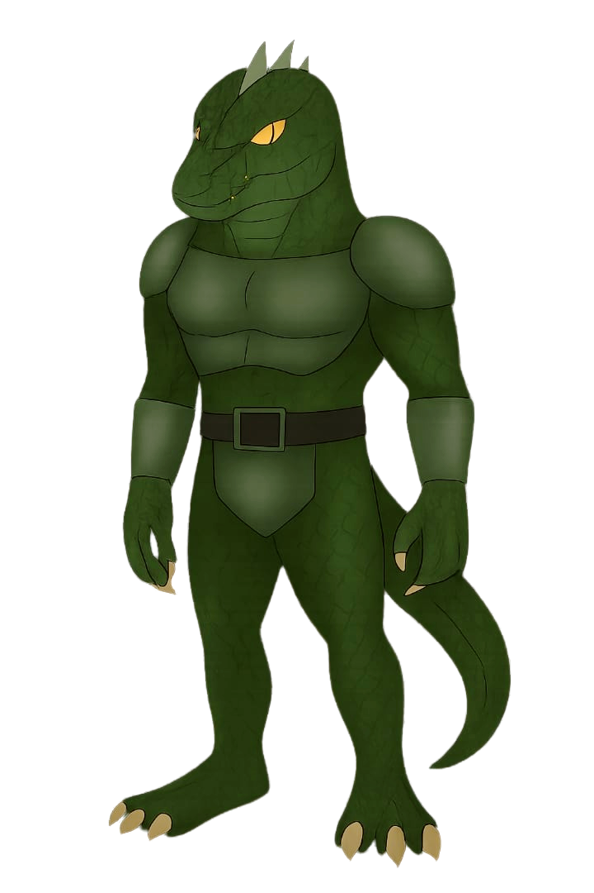
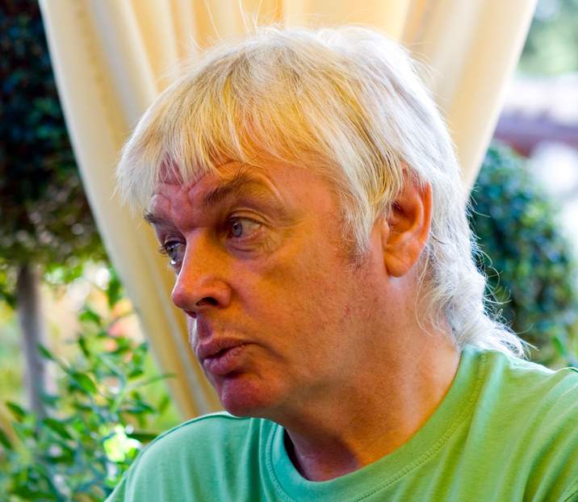
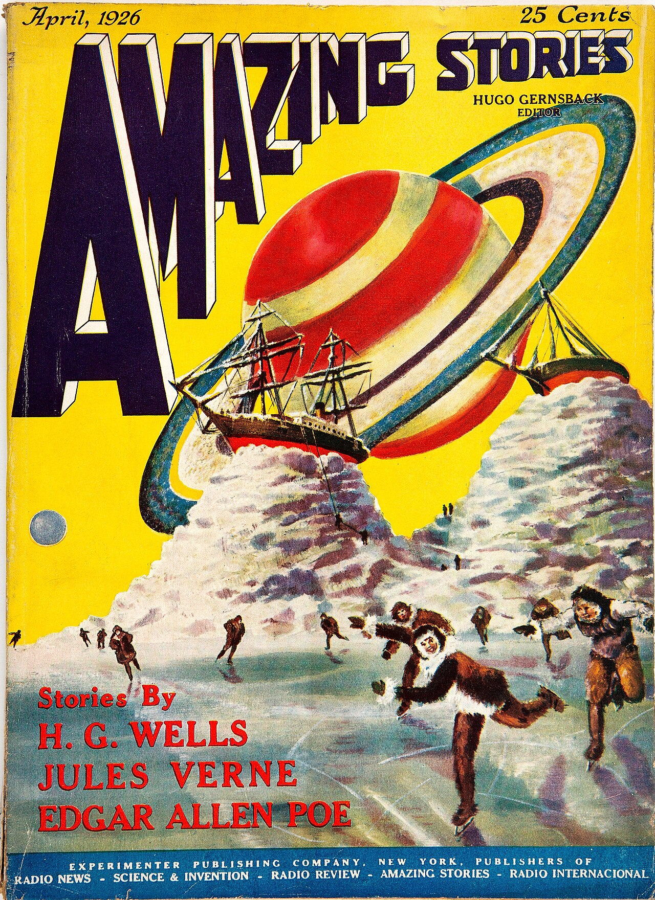
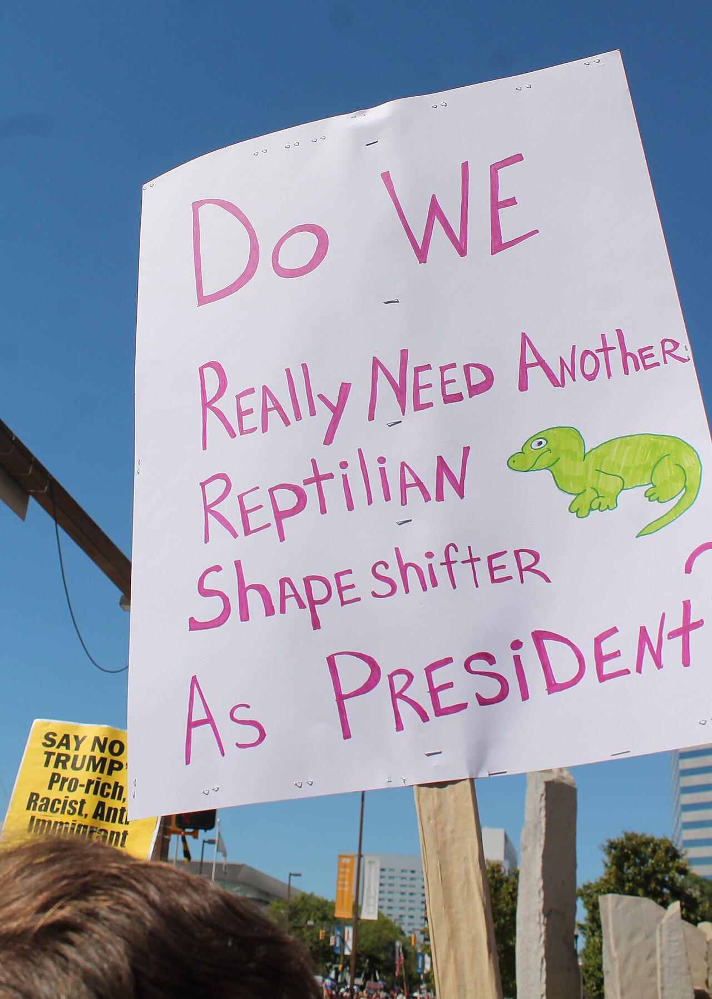
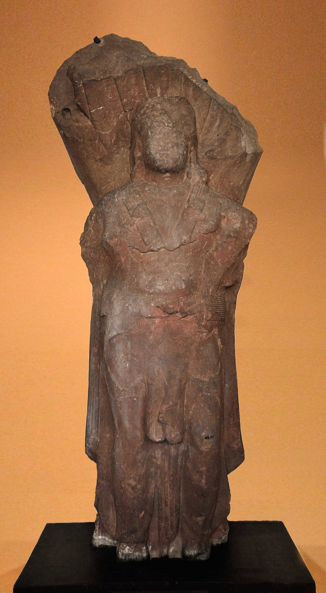
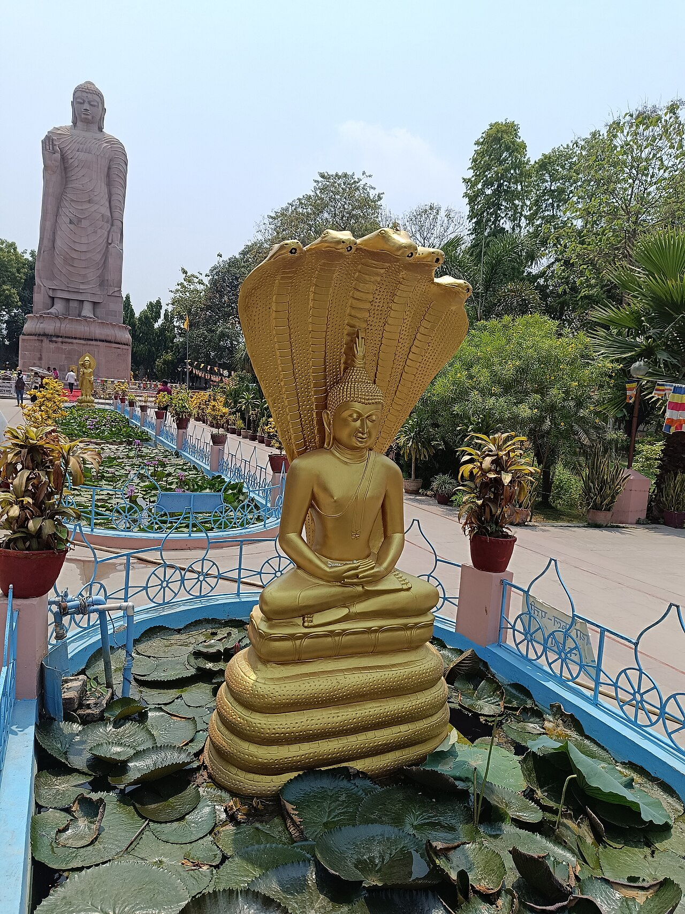

ÁREA 51

CHEGADA À LUA

ILLUMINATI

FINLÂNDIA

AVES NÃO SÃO REAIS

REPTILIANOS

TERRA PLANA
REPTILIANOS

Representação artística
A hipótese do disfarce humano
Figuras públicas viram alvos das teorias
Figurino em espetáculo
DÉCADA DE 1990

David Icke
OUTRA DIMENSÃO
Sistema estelar distante
MEDO
INFLUÊNCIA
UM VÍDEO DE SEGURANÇA VIRA BOATO REPTILIANO
O caso do agente de Obama
Fonte: Wikipedia • caso citado no Wired
Reconstituição de interface
Vídeo original • 2009
Exemplo de baixa resolução
Detalhe ampliado
Interpretação não é prova
Instituição pública
Espetáculo
COINCIDÊNCIA
NÃO É PROVA
SEM EVIDÊNCIA
CONFIÁVEL

Ficção científica

Boatos e desinformação

Nāga • representação histórica

Mitologia e religião